如果把宇宙作为一个整体来看待，人们自然会认为，宇宙在空间和时间上都应当是无限的。这是因为，如果答案不是如此，则立即会陷入无法解决的矛盾之中。例如，如果空间是有限的，则有限即意味着有边界，有边界即有内有外，这就要回答宇宙外面有什么这个问题。而本来宇宙就意味着无所不包，这样就出现了矛盾。又如，如果时间是有限的，即宇宙在时间上有开端，则也要面临时间开端之前宇宙是什么样的问题，这同样会带来矛盾。因此，在牛顿创立了经典力学之后，人们普遍接受了这样的看法，即受牛顿力学规律支配的宇宙，是在时间和空间上都无限的。空间的无限意味着，在上下、左右、前后这些方向上，都可以一直延伸到无穷远。时间的无限意味着，宇宙没有诞生，也没有死亡；时间可以无限地延续到将来，
也可以无限地倒推回到过去。
但是，问题随之而来：如果空间是无限的，那么宇宙中的物质将如何分布？答案只有两个：均匀分布或不均匀分布。牛顿认为是后者，即宇宙物质（星体）只分布在某个中心的周围，从这个中心向外，星体的密度要逐渐减小，直到最后，在遥远的地方变为空虚的空间。之所以这样的原因是，如果物质在宇宙中均匀分布，设其密度为 \rho ，则半径为 R 的球体（质量 M = 4\pi \rho R^3 /3 )在其边缘处的引力势为
\phi = \frac {G M}{R} = \frac {4 \pi \rho}{3} R ^ {2}\tag{7.2.1}
显然当 R \to \infty 时 \phi \to \infty ，同时 \phi 的导数（相应于引力）也趋于无穷大，而这在物理上是不允许的。
牛顿的这一结论与后来(1826年)德国天文学家奥尔伯斯(H. Olbers)的另一个推断是一致的, 这个推断称之为奥尔伯斯佯谬。它的意思是, 如果宇宙在空间上是无限的, 且均匀地布满恒星, 恒星的密度总体来说也保持不变, 则在这些恒星的照耀下, 地球上的夜空背景应当无限亮。奥尔伯斯的论证很简单(见图7.3)。设每颗恒星的光度为 L_{\star} , 恒星的空间数密度为 n_{\star} , 由于每颗恒星在地球上的照度反比于距离 r 的平方, 则容易看出, 全空间所有恒星的照度应当是下面的积分:
E = \int_ {0} ^ {\infty} \frac {L _ {*} n _ {*}}{4 \pi r ^ {2}} 4 \pi r ^ {2} \mathrm{d} r \rightarrow \infty\tag{7.2.2}
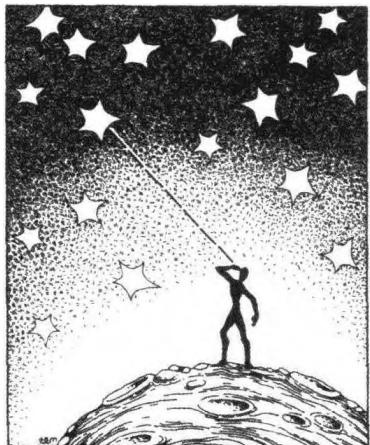
(a) 累积的星光应当亮如白昼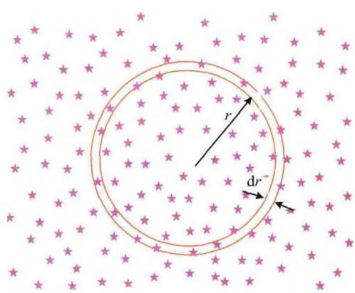
(b) 全空间恒星照度的计算简图 图7.3 奥尔伯斯佯谬即使考虑星际尘埃的消光效应，以及可能的恒星前后遮挡效应，夜空也应和布满亮星一样亮，其亮度可比满月。但事实上并非如此，因此星体在宇宙空间中均匀、无限分布的假设就遇到了严重问题。
但是，如果真如牛顿所认为的那样星体分布是不均匀的，则我们居住的宇宙部分应当成为宇宙的中心。但这样的体系是不稳定的，它将由于引力而坍缩。而如果宇宙无中心，似乎必须均匀；又由于无边界，似乎应当无限；而均匀无限又必然引出上述佯谬。所以，从牛顿理论和无限宇宙两点出发，并没有自洽的模型。因此，要么修改牛顿理论，要么放弃经典的空间（以及时间）概念，或者两者都要修改。
总之，一个均匀、无限、静态的宇宙显然会产生矛盾。现代宇宙学认为，上述无限与有限的矛盾出在时空上，即传统观念上的空间实际上是一个三维平直的欧几里德空间，因而有限必须有界。但实际上可以找到有限而无界的几何结构，即弯曲的时空。第一个提出这种结构的是黎曼(G. Riemann)，爱因斯坦首先把它运用于宇宙学。此外，正如哈勃1929年发现的那样，宇宙并不是静态的，这意味着空间也不是静态的。还有，现代宇宙学认为，宇宙有一个创生，因而时间也有一个开端。我们下面会看到，时空概念的这些变革将极大地改变我们观测到的宇宙图像，而且，只要满足上述时空概念变革之一，就不会产生奥尔伯斯佯谬。
实际上，早在黎曼之前，高斯就最先怀疑我们生存的空间是不是平直的。他提出了一种方法，用空间的内禀量来测量该空间是否弯曲。以二维空间为例（如图7.4a），如果空间是平直的（即平面），则任何一个三角形的内角和一定是 180^{\circ} 。而如果空间是弯曲的且具有正（负）曲率（例如球面或马鞍面），则内角和将大于（小于） 180^{\circ} 。这样，空间内任一三角形的内角和作为一个内禀量，就可以用来测量空间弯曲的程度。要指出的是，这样的测量是由位于该空间之内的观测者完成的。爱因斯坦曾这样比喻道，设想在二维空间（曲面）中有一种聪明的扁平生物。对它们来说，该曲面之外不存在任何其他东西，它们所看到的“宇宙”，就是曲面上的一切，光线也只能沿曲面传播。在此宇宙中，扁平生物测量一个任意三角形的内角和，并根据所测得的内角和与 180^{\circ} 的比较，即可得知该“宇宙”是平直的，还是弯曲的，甚至包括曲率的正负与大小。以正曲率宇宙（球面）为例，当扁平生物在两点之间画一条直线的时候，它们将得到一条曲线（见图7.4a中部图），我们“三维生物”把这条曲线叫作大圆，它是球面上两点之间最短的连线。同时，根据扁平生物的测量结果，这个宇宙具有一个有限的体积（即球面面积），因此它们断言，它们所生活的宇宙是有限的，但却是无边的。显然，对于这样一个宇宙，不会出现奥尔伯斯
佯谬。
还可以利用一个圆的周长与半径之比，来测量空间的弯曲程度。仍以两维空间为例（如图7.4b所示的球面），以 P 点为圆心，取半径（相当于一段大圆的弧长）为 a ，在球面上画一个圆，其周长为
C = 2 \pi R \sin \theta = 2 \pi R \sin \frac {a}{R} = 2 \pi a \left(1 - \frac {a ^ {2}}{6 R ^ {2}} + \dots\right)\tag{7.2.3}
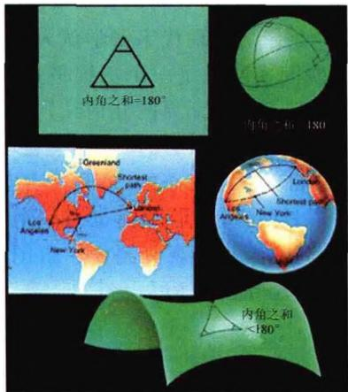
(a)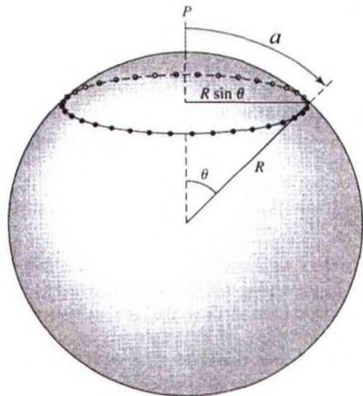
(b) 图7.4 弯曲空间的几何其中 R 是球面的曲率半径，它只有在三维空间中才可以直接测量。由此可见，只有当 R \to \infty （相应于二维平直空间，即平面）时，才会有 C = 2\pi a 。因此，位于球面上的聪明的扁平生物，根据测量到的 C / 2\pi a 值与1的偏离，就可以得知它们所在的宇宙的空间弯曲程度。同时，球面生物在测量中还会发现一个有趣的现象：一个圆的圆周长起先随着半径 a 的增大而增大，当 a = \pi R / 2 时，圆周长达到最大（参见7.2.3式）。此后，当半径继续增大时，圆周长反而逐渐减小，当 a = \pi R 时圆周长 C = 0 。但在整个测量过程中，圆的面积总是逐渐增加的，直到圆的面积等于整个“宇宙”的大小（即球面面积）为止。
空间弯曲的另一个有趣的结果，是遥远天体(如星系)的角直径与距离的关系。当空间为平直时，越远的星系，它的张角即角直径也越小(图7.5a)。当空间弯曲时，情况就并非如此了。如图7.5b所示的正曲率空间(球面)，当星系位于观测者所在的半球时，距离越远角直径越小；而当星系远在另一个半球时，离观测者越远
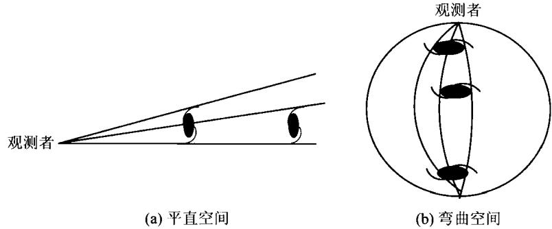
图 7.5 平直空间与弯曲空间中, 观测到的星系角直径的比较的星系，其角直径反而越大。
空间弯曲对星系的计数结果也会有直接影响。设星系均匀分布，数密度为 n。对于平直空间，半径 a 以内的星系数为（参见图 7.6a）
N (a) = \pi a ^ {2} n, \quad \frac {\mathrm{d} N (a)}{\mathrm{d} a} = 2 \pi a n\tag{7.2.4}
而当空间为二维球面时(参见图 7.6b)，有
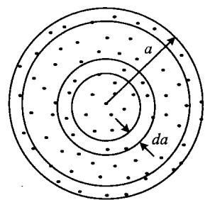
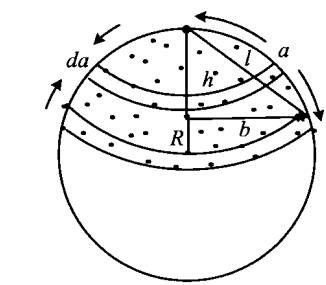
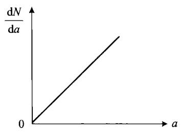
(a) 平直空间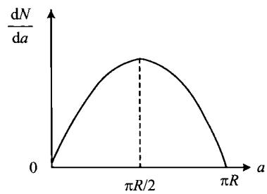
(b)弯曲空间 图7.6 平直空间与弯曲空间星系计数的比较\begin{array}{r l} N (a) & = 2 \pi R ^ {2} \left(1 - \cos \frac {a}{R}\right) n = \pi (h ^ {2} + b ^ {2}) n = \pi l ^ {2} n < \pi a ^ {2} n \\ & \frac {\mathrm{d} N (a)}{\mathrm{d} a} = 2 \pi R \sin \left(\frac {a}{R}\right) \cdot n \end{array}\tag{7.2.5}
我们再来看一下空间膨胀会产生怎样的观测效应。以二维球面为例，但现在空间膨胀，即球面半径 R 随时间变化。如图 7.7a 所示，AB 两点静止于球面上， \widehat{AB}=R\alpha 。设 R 随时间的变化率为 \dot{R} ，则经过一个时间间隔 \Delta t 后，球面的半径变为
R ^ {\prime} = R + \dot {R} \Delta t, \quad \widehat {A ^ {\prime} B ^ {\prime}} = R ^ {\prime} \alpha\tag{7.2.6}
球面上的观测者并不知道球面在膨胀，但 A 点的观测者可以看到 B 点离他远去，退行速度是：
\begin{array}{l} v = \frac {\widehat {A ^ {\prime} B ^ {\prime}} - \widehat {A B}}{\Delta t} = \frac {(R + \dot {R} \Delta t) _ {\alpha} - R _ {\alpha}}{\Delta t} \\ = \dot {R} _ {\alpha} = \left(\frac {\dot {R}}{R}\right) R _ {\alpha} = \left(\frac {\dot {R}}{R}\right) d \end{array}\tag{7.2.7}
此处 d \equiv R\alpha = AB 。因而在 A 点的观测者看来，在同一时刻，以 A 点为中心、 d 相同处的所有天体退行速度一样，并且天体越远（ d 越大），退行速度 v 也越大，这就是哈勃关系，它展现了一幅宇宙膨胀的图像（图7.7b）。但要注意的是，这样的膨胀图像并不表示宇宙以 A 点为中心，如果观测者不是位于 A 点而是位于 B 点，他看到的图像将与图7.7b完全相同。也就是说，无论观测者位于球面宇宙的何处，
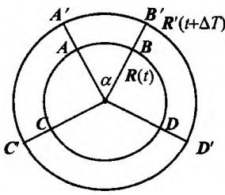
(a)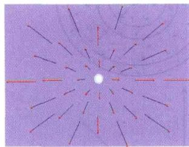
(b) 图7.7 膨胀的二维球面宇宙膨胀的图像都是一样的，宇宙中并不存在唯一的膨胀中心。把上述球面宇宙的结果推广到三维空间亦是如此，虽然三维弯曲空间很难直观想象，但哈勃关系的结论完全相同。当 R 很大时，弯曲空间趋近平直空间，此时只要空间一直是膨胀的，亦有此效应。
我们下面会谈到，宇宙膨胀直接导致星系的宇宙学红移，因而哈勃关系也可以表述为星系的红移-距离关系。定性地讲，由于星系的退行，观测者接收到的光子波长，会因为多普勒效应而向长波方向移动，即波长变长，这就是红移。距离越远的星系，退行速度越大，所发出的光子的红移也越大。光子的波长变长意味着频率变小，而光子的能量正比于频率，因而越远处发出的光子，到达观测者时的能量也越小。当距离增加到红移为无限大时，光子的能量为零，也就是说光子就接收不到了。这就使得采用(7.2.2)式计算地球上的照度时，恒星(星系)的光度不能再看作为常量，而是随距离的增加而减小，到一定距离上光度变为零。因此，(7.2.2)式最后的积分结果一定是一个有限的值，而不会趋于无穷大，从而避免了奥尔伯斯佯谬。
宇宙的有限与无限问题也包括时间。大爆炸宇宙模型认为，宇宙是由真空的量子过程而创生的，因此宇宙的年龄是有限的。我们下面会进一步讨论这个问题。这里只指出，如果时间有开端，由于光速的有限性，则无论宇宙的空间大小是否为有限，观测者所能看到的宇宙大小总是有限的。这一大小 l 相当于光在宇宙年龄 t 这段时间内跑过的距离，即 l \simeq ct, l 通常称为宇宙学视界。视界的有限性就使得(7.2.2)式的积分不能对无限空间进行，这样，即使没有空间的弯曲和膨胀，也不会出现奥尔伯斯佯谬。